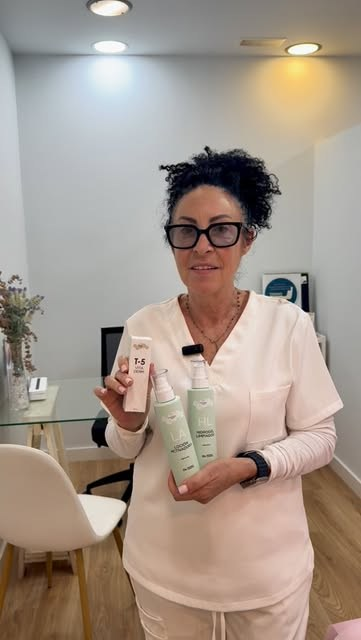
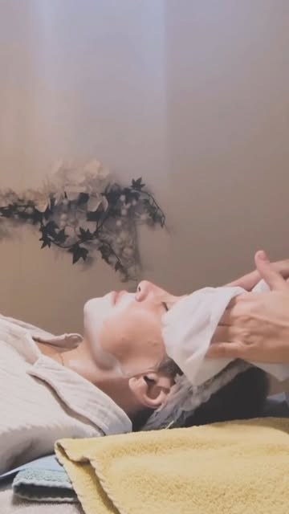
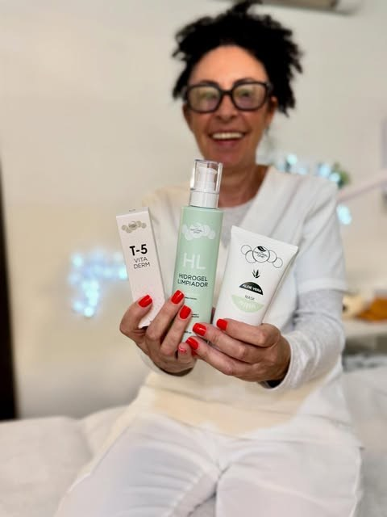
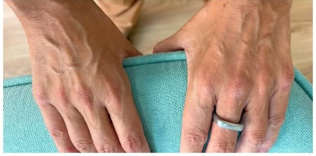
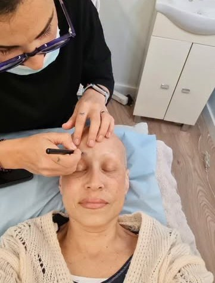
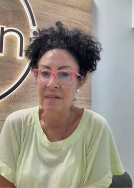
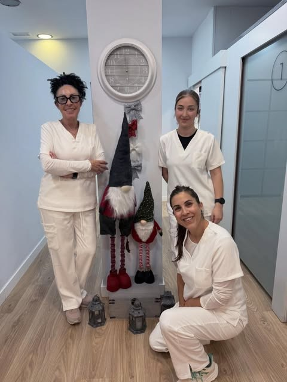

La teva pelles renova cada28 dies.
Centre fisiològic de la pell · Blanes
El primer mes, pas a pas
La pell triga unes quatre setmanes a renovar-se. Per això, al principi, et veiem cada setmana: així seguim de prop tot el primer cicle.
-

Setmana 1
Estudi de la pell i primera sessió
Estudiem el biotip, com està ara, quins cosmètics fas servir i com et sents. I comencem a equilibrar-la.
-

Setmana 2
Sessió setmanal a cabina
Mirem com ha respost la pell i ajustem el tractament. Cada sessió és diferent, perquè la teva pell va canviant.
-

Setmana 3
La rutina a casa fa la seva feina
Entre sessió i sessió, la cosmètica The Natural One continua el tractament: netejar, equilibrar i el sèrum que la teva pell necessiti.
-

Setmana 4
Revisem i decidim el pas següent
Al final del primer cicle valorem com ha canviat la pell: si cal continuar cada setmana, passar a regenerar-la o espaiar les sessions.
Centre de confiança The Natural One
Cosmètica que respecta la fisiologia de la pell
Treballem amb el mètode i les fórmules de The Natural One: ingredients naturals en alta concentració, sense perfums, colorants ni irritants, sobre una base que deixa respirar la pell.
Segons The Natural One, més del 70 % dels desequilibris de la pell els provoquen cosmètics inadequats. Per això també et diem què has de deixar de fer servir.
Veure la llista de centres de confiançaEls nostres tractaments
Cada tractament parteix d'un estudi de la pell i es fa a mida: a cabina, amb sessions setmanals al principi, i a casa, amb la rutina que et preparem.
01 · Pells amb desequilibris
Acne i pell grassa
En tres fases (equilibri, regeneració i manteniment), amb sessions setmanals al principi i productes que no obstrueixen el porus.
02 · Pells amb desequilibris
Rosàcia, dermatitis i pell sensible
Calmem i reparem pells vermelles, irritades o que es descamen, amb fórmules suaus i tenint en compte el component emocional.
03 · Pells amb desequilibris
Taques i marques
Busquem l'origen de cada taca i triem ingredients que regulen la melanina, sempre amb protecció solar.
04 · Pells amb desequilibris
Estètica oncològica
Preparem la pell abans de la quimio o la radioteràpia, la cuidem durant el tractament i l'ajudem a recuperar-se.
05 · Salut i bellesa
Estudi de la pell
El primer pas: biotip, estat actual, hàbits i cosmètics que fas servir. D'aquí surt el teu pla.
06 · Salut i bellesa Nou
Full Lift · fermesa facial
Programa facial de reafirmació: to, fermesa i llum en sessions progressives.
07 · Salut i bellesa
Antiaging · Natural WellAging
Hidratació profunda, nutrició i regeneració amb la línia Natural WellAging de The Natural One.
08 · Salut i bellesa
Hidratació i lluminositat
Per a pells apagades o deshidratades: hidratem les capes profundes, no només la superfície.
09 · Cos i benestar
Massatges i corporal
Massatge manual i tractaments corporals en un espai tranquil i sense sorolls.
10 · Cos i benestar
Osteopatia clínica de l'ATM
Mandíbula, bruxisme, tensió i dolor facial tractats des de l'osteopatia clínica.
11 · Cos i benestar
Àrea mèdica
Medicina estètica amb criteri mèdic dins el mateix centre.
No saps per on començar?
Comencem per l'estudi de la teva pell. Després t'expliquem el pla.
Reserva l'estudi

Estètica oncològica
Quan la pell passa per un moment difícil, hi som.
La quimioteràpia i la radioteràpia canvien la pell. La preparem abans, la cuidem durant el tractament i l'ajudem a recuperar-se després, amb productes sense components irritants i, sobretot, amb temps i escolta.


Montse Gayete i equip
Més de 20 anys cuidant la pell de Blanes.
Un equip format en el mètode The Natural One. Hi ha clientes que fa més de dues dècades que venen: ens coneixen pel nom, i nosaltres coneixem la seva pell.
«Molt bon tracte: fa més de 20 anys que hi vaig i m'han ajudat molt en tot moment.»
Ressenya a Google Traduïda del castellà
Calcula el cicle de la teva pell
La pell jove es renova cada 28 dies, aproximadament. Amb els anys, el cicle s'allarga. Mou el control i mira com és el teu.
Als 42 anys, la teva pell es renova cada 38 dies, aproximadament.
Un cicle complet són unes 6 setmanes. Al principi tractem la pell cada setmana; a l'estudi de la pell et diem quantes sessions necessita la teva.
Reserva l'estudi per WhatsAppValors orientatius. Cada pell és diferent.
Arrossega la lluna per l'anell
Neixen cèl·lules noves a la capa més profunda de la pell.
Què en diuen les clientes
4,9 de 5 · 46 ressenyes a Google
«Estic encantada amb aquesta estètica. Hi vaig cada mes i sempre en surto súper contenta amb el resultat. Les instal·lacions estan molt ben cuidades i tenen moltíssims serveis […]»
Laia S. Traduïda del castellà
«Fa més d'un any que vinc a l'estètica cada mes, i puc dir que l'amabilitat i la professionalitat de la Montse i el seu equip són una meravella. M'encanta anar a les sessions: l'acne m'ha millorat moltíssim gràcies al tractament […]»
Mirella N. Traduïda del castellà
«Sempre que vaig a Blanes demano hora a Centre Únic. Professionals, atentes, un lloc relaxat i sense sorolls. Ho recomano.»
Ressenya a Google Traduïda del castellà
Vine al centre
Carrer Jaume I, 4
17300 Blanes
- Dilluns
- Tancat
- Dimarts
- 9:00 – 13:00 · 15:00 – 20:00
- Dimecres
- 9:00 – 13:00 · 15:00 – 20:00
- Dijous
- 9:00 – 13:00 · 15:00 – 20:00
- Divendres
- 9:00 – 13:00 · 15:00 – 20:00
- Dissabte
- 9:00 – 13:00
- Diumenge
- Tancat